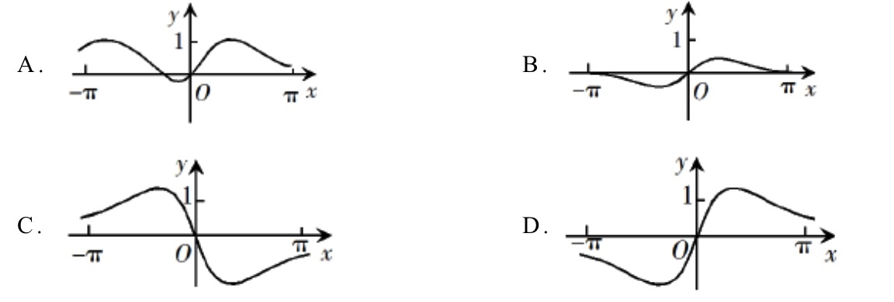
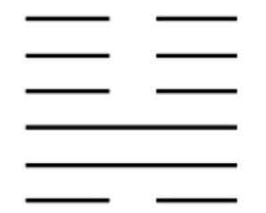
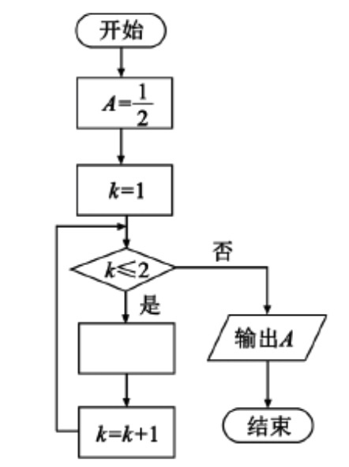

CCBB
DABA
ABCD
y=3x
121/3
0.18
2
2019-全国I卷-理-1
已知集合M={x∣−4<x<2},N={x∣x2−x−6<0},则M∩N=()
A.{x∣−4<x<3}
B.{x∣−4<x<−2}
C.{x∣−2<x<2}
D.{x∣2<x<3}
2019-全国I卷-理-2
设复数z满足∣z−i∣=1,z在复平面内对应的点为(x,y),则()
A.(x+1)2+y2=1
B.(x−1)2+y2=1
C.x2+(y−1)2=1
D.x2+(y+1)2=1
2019-全国I卷-理-3
已知a=log20.2,b=20.2,c=0.20.3,则()
A.a<b<c
B.a<c<b
C.c<a<b
D.b<c<a
2019-全国I卷-理-4
古希腊时期,人们认为最美人体的头顶至肚脐的长度与肚脐至足底的长度之比是
5√−12(5√−12≈0.618称为黄金分割比例),著名的"断臂维纳斯"便是如此.此外,
最美人体的头顶至咽喉的长度与咽喉至肚脐的长度之比也是5√−12.若某人满足
上述两个黄金分割比例,且腿长为105cm,头顶至脖子下端的长度为26cm,则其
身高可能是()
A.165cm
B.175cm
C.185cm
D.190cm
2019-全国I卷-理-5
函数f(x)=sinx+xcosx+x2在[−π,π]的图像大致为()

2019-全国I卷-理-6
我国古代典籍<<周易>>用"卦"描述万物的变化.每一"重卦"由从下到上
排列的6个爻组成,爻分别为阳爻"−−"阴爻"−−",如图就是一重卦.在所有
重挂中随机取一重卦,则该重卦恰好有3个阳爻的概率是()

A.516
B.1132
C.2132
D.1116
2019-全国I卷-理-7
已知非零向量a,b满足∣a∣=2∣b∣,且(a−b)⊥b,则a与b的夹角为()
A.π6
B.π3
C.2π3
D.5π6
2019-全国I卷-理-8
如图是求12+12+12的程序框图,图中空白框中应填入()

A.A=12+A
B.A=2+1A
C.A=11+2A
D.A=1+12A
2019-全国I卷-理-9
记Sn为等差数列{an}的前n项和.已知S4=0,a5=5,则()
A.an=2n−5
B.an=3n−10
C.Sn=2n2−8n
D.Sn=12n2−2n
2019-全国I卷-理-10
已知椭圆C的焦点为F1(−1,0),F2(1,0),过F2的直线与C交于A,B两点.
若|AF2|=2|F2B|,|AB|=|BF1|,则C的方程为()
A.x22+y2=1
B.x23+y22=1
C.x24+y23=1
D.x25+y24=1
2019-全国I卷-理-11
关于函数f(x)=sin|x|+|sinx|有下述四个结论:
(1).f(x)是偶函数
(2).f(x)在区间(π2,π)单调递增
(3).f(x)在[−π,π]有4个零点
(4).f(x)的最大值为2
其中所有正确结论的编号是()
A.(1)(2)(4)
B.(2)(4)
C.(1)(4)
D.(1)(3)
2019-全国I卷-理-12
已知三棱锥P−ABC的四个顶点在球O的球面上,PA=PB=PC,ΔABC是边长
为2的正三角形,E,F分别是PA,AB的中点,∠CEF=90o,则球O的体积为()
A.86‾√π
B.46‾√π
C.26‾√π
D.6‾√π
2019-全国I卷-理-13
曲线y=3(x2+x)ex在点(0,0)处的切线方程为()
2019-全国I卷-理-14
记Sn为等比数列{an}的前n项和.若a1=13,a24=a6,则S5=()
2019-全国I卷-理-15
甲,乙两队进行篮球决赛,采取七场四胜制(当一队赢得四场胜利时,该队获胜).
根据前期比赛成绩,甲队的主客安排一次为"主主客客主客主".设甲队主场
取胜的概率为0.6,客场取胜的概率为0.5,且各场比赛结果相互独立,则甲队
以4:1获胜的概率是()
2019-全国I卷-理-16
已知双曲线C:x2a2−y2b2=1(a>0,b>0),其左,右两焦点分别为F1,F2,
过F1的直线与C的两条渐近线分别交于A,B两点.若F1A−→−=AB−→,F1B−→−·F2B−→−=0,
则C的离心率为()